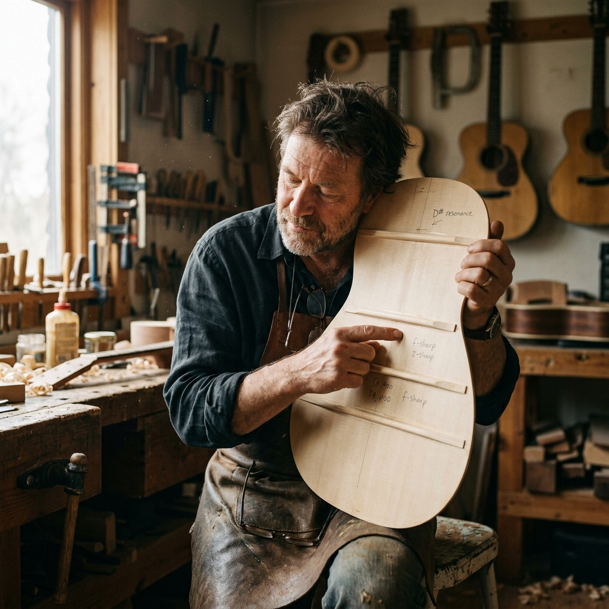
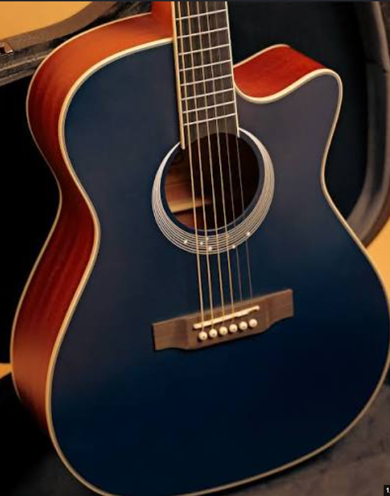
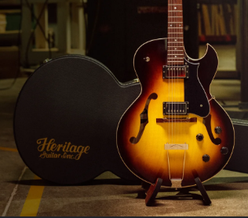
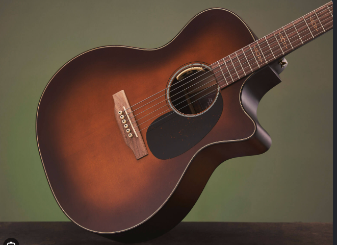
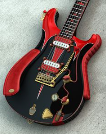

Notes from the Bench
Insights, maintenance tips, and the philosophy behind our craft.

Atelier Diaries
The Lost Art of Tap Tuning
Why relying solely on calipers will never produce a truly exceptional acoustic guitar, and how we learn to listen to the wood before the first cut is ever made.
Read Article
Wood Library
The Acoustics of Adirondack Spruce
Why this legendary tonewood remains the gold standard for headroom and clarity.

Maintenance
Seasonal Setup Adjustments
How humidity changes affect your neck relief and what you can do about it.

Atelier Diaries
Hide Glue vs. Modern Adhesives
A deep dive into why we still prefer traditional hot hide glue for our builds.
Restoration
Preserving the Patina
The delicate balance between making an instrument playable and destroying its history.
Tech Talk
Scatter Winding Pickups
How uneven wire tension contributes to a more open and dynamic electric tone.

Maintenance
The Importance of Crown
Why perfectly leveled frets still buzz if they aren't properly crowned.